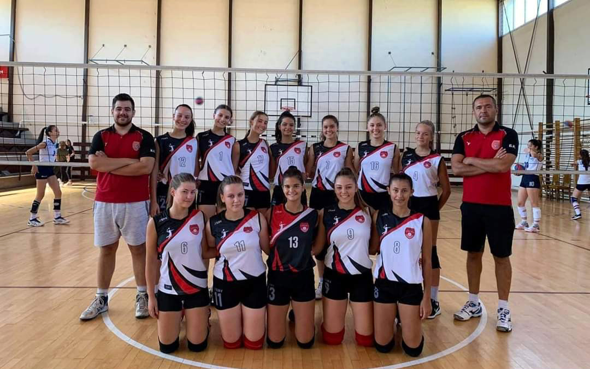

🥇 Šampionke Republike Srpske
Juniorska liga RSJuniorska ekipa OK Libero okrunila sezonu titulom šampiona RS, potvrđujući kvalitet rada trenerskog štaba i predanost igračica.

🥈 Vicešampionke Republike Srpske
Kadetska liga RSKadetkinje su u istoj sezoni izborile srebrnu medalju, čineći 2022. godinu najuspješnijom u istoriji kluba.

🥇 Osvajači lige RS
Druga liga RSGeneracija koja je ostavila dubok trag sa osvajanjem druge lige RS i ulaskom u prvu ligu prvi put u istoriji kluba za ženske selekcije.

🥈 Finalisti Lige RS
Prva Liga RSSeniorska ekipa dostigla finale Lige RS, potvrđujući stalni napredak i ambicije kluba na seniorskom nivou.